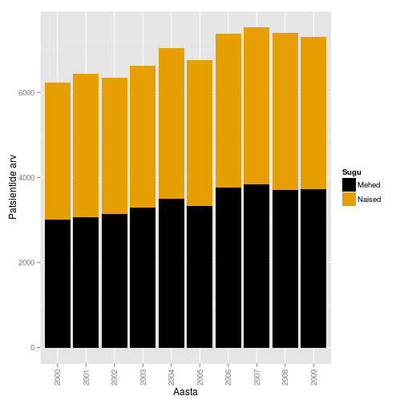
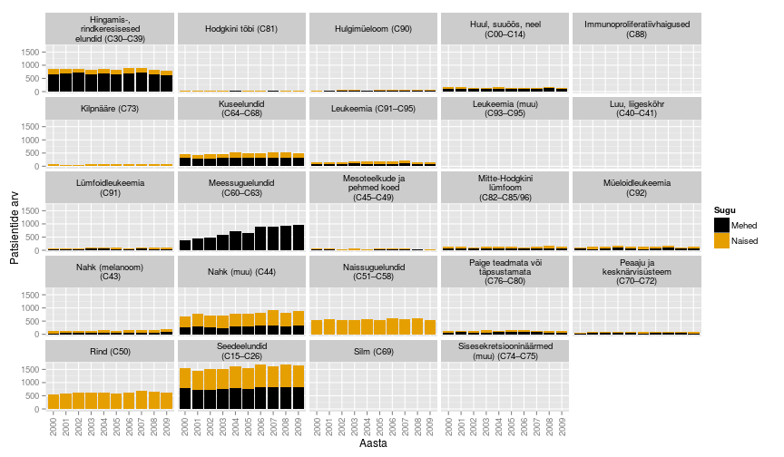

Onkobioloogia
Vähkkasvajate molekulaarsed mehhanismid
Taavi Päll
vanemteadur, Vähiuuringute Tehnoloogia Arenduskeskus
Sissejuhatuseks
Vähk
- Mõiste vähk (tuumor, pahaloomuline kasvaja, neoplasm) tähistab suurt hulka erinevaid haiguseid (NCI ~160 olulisemat) mis võivad tekkida kõigis keha kudedes.
- Vähi tunnuseks on ebanormaalsete rakkude kasv väljapoole nende normaalseid piire. Kõrvalolevate kudede invasioon ja levik teistesse organitesse ehk metastaseerumine.
- Metastaasid on ka enamuse kasvajatest tingitud surmade põhjustajaks.
WHO andmetel
- Vähkkasvajad on maailmas üks juhtivatest surma põhjustatavatest haigustest, nõudes 8.2 miljonit elu 2012. a (EU-27 osakaal 2012: 1.27 miljonit (15%))
- Kopsu-, maksa-, mao-, kolorektaal- ja rinnakasvajad põhjustavad enim vähisurmasid
- sagedasemad vähitüübid on naistel ja meestel erinevad
- ~30% vähisurmadest on tingitud viiest käitumis ja dieediriskist: kõrge BMI, vähe puu- ja aedvilju menüüs, vähene füüsiline aktiivsus, tubakas/suitsetamine, alkohol
- arengumaades põhjustavad 20% vähkidest hepatiidi viirused B ja C ning papilloomiviirused
- ennustatkse, et haigestumus suureneb maailmas 14 miljonilt 2012.a 22 miljonini 2030ndatel
Vähi kolm peamist väljakutset 21. saj maailmas
Ülekaalulisus ja vähk
- Obesity is a risk factor for breast (post-menopausal), colorectal, endometrial, kidney, esophageal and pancreatic cancers.
- People who are overweight or are obese may be at greater risk for cancer recurrence and death.
- Obesity and overweight rates have increased in countries at all income levels.
- Physical activity and a healthy diet are the two key ways to reduce the risk.

Suitsetamise tõus arengumaades
- Üle 1.3 miljardi inimese suitsetab maailmas tubakat. Suitsetamine põhjustab erinevaid kasvajaid ja vastutab 1/5 vähisurmade eest maailmas.
- Lähis-Idas ja Aafrikas on ajavahemikus 1990-2009 sigarettide tarbimine suurenenud 57%.
- Kuigi keskeas suitsetamise maha jätmine vähendab üle 60% kopsuvähi riski, teevad arengumaades seda vähesed.
- Sigarettide maksustamises nähakse vastumeedet, kuid sissetulekud tõusevad kiiremini kui maksud.

Diagnostika ja teraapia kättesaadavus
- Tingituna piiratud juurdepääsust diagnostikale ja ravile on madala ja keskmise sissetulekuga maades vähisurmade suhe intsidentsi umbes 20% kõrgem kui arenenud maades.
- Piiratud juurdepääs on tingitud nii kõrgest hinnast, ebapiisavast infrastruktuurist kui personali puudusest.
- Radioteraapia on näidustatud umbes 60% vähipatsientidest, siiski pole see kättesaadav arengumaades elavatele 82% maailma rahvastikule.
30 Aafrika ja Kagu-Aasia riigis puudub radioteraapia teenus täielikult

Erinevused 5-aasta elulemuses maailmas

Kõige sagedasemad surmaga lõppevad vähid maailmas, 2012 aasta seis:
- kops (1.59 miljonit surma)
- maks (745 000)
- magu (723 000 deaths)
- kolorektaal (694 000)
- rinnavähk (521 000)
- söögitoru (400 000)
Kasvajatesse haigestumus Eestis

Andmed: TAI vähiregister
Kasvajad Eestis paikmete kaupa

Andmed: TAI vähiregister
Sagedasemad paikmed

Seedelundkond

Rindkere

Esmased vähid ja 5 aasta suremus

Pilt: Marshall, 2011.
Vähiravi/teraapiad
- lõikus
- kemoteraapia,
- kiiritusravi,
- märklaud teraapiad
- bioloogiline ravi
- angiogeneesi inhibiitorid
Vähiravimid
Top 10 best-sellerit vähiravimite hulgas 2013 (maailmas):
| Bränd | näidustus | globaalne müük | firma (aktsia) |
|---|---|---|---|
| Rituxan/MabThera | non-Hodgkin's lymphoma, CLL | $7.78 billion | Roche (RHHBY34.04+1.67%) |
| Avastin | Colorectal, lung, ovarian and brain cancer | $6.75 billion | Roche |
| Herceptin | Breast, esophagus and stomach cancer | $6.56 billion | Roche |
| Gleevec | Leukemia, GI cancer | $4.69 billion | Novartis (NVS98.15+0.76%) |
| Alimta | Lung cancer | $2.7 billion | Eli Lilly (LLY70.22-0.95%) |
| Velcade | Multiple myeloma | $2.6 billion | Takeda, J&J (JNJ101.36-1.07%) |
| Erbitux | Colon and head and neck cancer | $1.87 billion | Merck, BMS (BMS46.05+2.08%) |
| Lupron, Eligard | Prostate and ovarian cancer | $1.73 billion | AbbVie, Takeda; Sanofi, Astellas |
| Zytiga | Prostate cancer | $1.7 billion | J&J |
| Revlimid | Multiple myeloma, mantle cell lymphoma | $1.09 billion | Celgene (CELG116.57-0.88%) |
Ravimiresistentsus
- Üks peamiseid limiteerivaid faktoreid mis määrab süsteemse vähiravi efektiivsuse
- kliinliselt defineeritakse ravimiresistentsena selline vähk mis progresseerub ravi käigus
- peale resistentse haiguse välja kujunemist reeglina muudetakse ravi, võetakse kasutusele mõni teist tüüpi (teisest klassist) ravim
- eelduseks on et vähi poolt omandatud resistentsus on permanentne ja "päritav" omadus
- võib piisata ka sama ravi jätkamisest peale "ravipuhkust"
Kursus
Kursuse eesmärgid
- selgitada vähkkasvajate tekke molekulaarseid ja rakulisi mehhanisme
- selgitada vähiravi printsiipe
Raamat
- Robert A. Weinberg
The Biology of Cancer
New York, Garland Science, 2007
Kohaviit: 616/W-46
Artikkel: The Hallmarks of Cancer
- Hanahan, D., and R. A. Weinberg. 2000. The Hallmarks of Cancer. Cell 100:57-70.
- Hanahan, D., and R. A. Weinberg. 2011. Hallmarks of Cancer: The Next Generation. Cell 144:646-674.

Pilt: Hanahan and Weinberg, 2011.
Teemad
- vähitüübid, vähitekkeprotsess
- onkogeenid
- kasvufaktorid ja retseptorid
- signaalirajad
- tuumor-suppressor geenid
- pRb ja rakutsükkel
- p53 ja apoptoos
- genoomi stabiilsus/ebastabiilsus
- angiogenees
- kasvaja mikrokeskkond
- invasiivsus metastaas
- kasvaja immunsus ja immunoteraapia
- ravimiresistentsus
Kasvaja molekulaarne portree

Kasvaja genoomika
Täpsusmeditsiini üheks võimaluseks on patsiendi geneetilise info kasutamine ravis
Kasvaja genoomika eesmärgiks on personaalse meditsiini arendamine kasutades DNA sekveneerimist ja analüüsimist selleks, et määrata spetsiifilise kasvajaga seotud geneetilised muutused
Vähirakkudes toimunud muutuste mõistmine lubab arendada efektiivsemaid ravistrateegiaid lähtuvalt konkreetse patsiendi vähi geneetilisest profiilist
The Cancer Genome Atlas
TCGA:
- To collect and characterize more than 20 tumor types
- Each cancer will undergo comprehensive genomic characterization and analysis
- eksoomi sekveneerimine
- ekspressiooni ja SNP kiibid
- proteoomika
- Data are freely available and can be accessed by the cancer community through the TCGA Data Portal and the Cancer Genomics Hub (CGHub).
Lingid loengutele
Viited
[1] D. Hanahan and R. A. Weinberg. "Hallmarks of Cancer: The Next
Generation". In: Cell 144.5 (2011), pp. 646 - 674. ISSN:
0092-8674. DOI: http://dx.doi.org/10.1016/j.cell.2011.02.013.
[2] E. Marshall. "Cancer Research and the $90 Billion Metaphor".
In: Science 331.6024 (2011), pp. 1540 - 1541. DOI:
10.1126/science.331.6024.1540-a. eprint:
http://www.sciencemag.org/content/331/6024/1540.1.full.pdf.